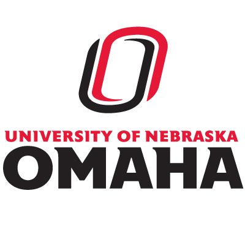

Univeristy Nebraska At Omaha
The University of Nebraska Omaha, often referred to as Omaha or UNO, is a public research university located in Omaha, Nebraska, United States.[4] Founded in 1908 by faculty from the Omaha Presbyterian Theological Seminary as a private non-sectarian college, the university was originally known as the University of Omaha.[5][6] Meant to provide a Christian-based education free from ecclesiastical control, the university served as a strong alternative to the city's many successful religiously affiliated institutions.[7] Serving as Nebraska's premier metropolitan university, UNO continues to rapidly expand to meet the growing demands of the city of Omaha and the state of Nebraska. Since the year 2000, the university has more than tripled its student housing and is currently building a 450-bed student dormitory and academic space on its south campus.[5][8] It has also recently constructed modern facilities for its engineering, information technology and business programs.[5] UNO currently offers more than 200 programs of study across 6 different colleges and has over 60 classroom, student, athletic, and research facilities spread across 3 campuses.[9][10] The university expects to enroll 20,000 students by the year 2020.[11] The Omaha Mavericks compete in 15 NCAA Division I sports in both the NCHC and Summit League conferences. The ice hockey, basketball, and volleyball teams compete in the new Baxter Arena located on the university's Center street campus. UNO recently enjoyed national attention when its men's hockey team reached the national semifinal (Frozen Four) of the NCAA tournament.[12]
